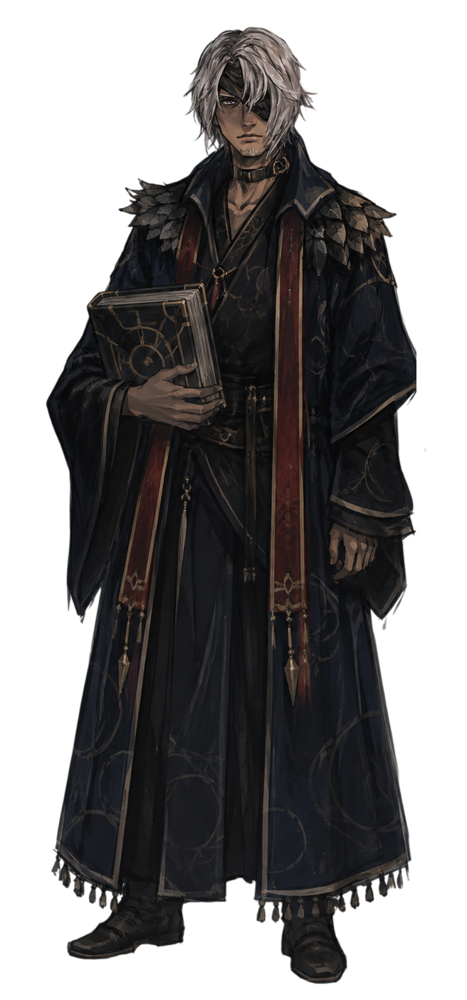
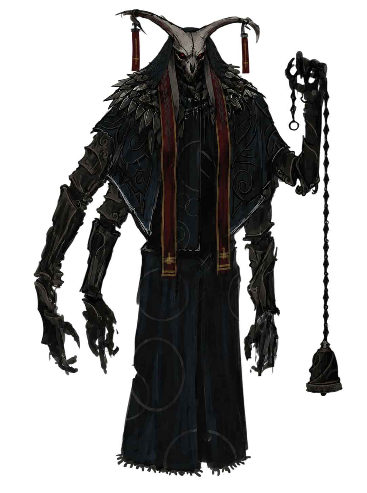

The Wall and the Oath
Alathyn was born within sight of Anorlondo's outer wall, in a garrison town that existed for no reason but to feed the army beyond it. There was no question of what he would become. At sixteen he swore the soldier's oath before a captain who did not look up from his ledger, but Alathyn had already been taught his letters by a village priest, and so he was not handed a spear first. He was handed the company's death-rites tome, and told to walk behind the line and read the departing words over whoever the wall did not spare.
So much did he learn of the ways of war, and the cost of the oaths that bound them. While he did not hold a blade, he felt every ounce of blood shed on the battlefield.
Thou learnest quick, on the field which prayers are answered and which are only heard. — Alathyn
The Hollow at Greywater
The campaign that made him a soldier in truth was fought at Greywater Hollow, a siege that lasted eleven weeks and ended with a third of the company left in the mud. It was there that Ordell Fenn, a quartermaster's son with no business on the front line, dragged Alathyn out from beneath a collapsed palisade, and took the follow-up strike across Alathyn's face instead of his own. Alathyn lost his eye, but kept his life. He has worn the dark since, hair combed forward to cover what the wound left behind, and has never once complained of the trade.
It was there, too, that his own captain; a hard, ambitious officer named Reyne Ashcombe, lost the western flank through his own impatience and let a company of green recruits take the blame in his official report. Alathyn was one of the men named. He never forgave the lie.
The Silence After
Wars don't often end in flashy displays, or the fall of kingdoms, but simply minor border disputes and diplomatic resolutions. But for the soldiers, the war was a long, slow fade into the background, a quiet resignation to the fact that the world had moved on without them. Much the same for Alathyn.
It was grief, mostly, that walked him to the doors of the Church of Yorshka. Grief wants an answer, and the Church was in the business of selling one — and it already knew his name from the tome in his hands.
The Church of Yorshka
The Church taught a doctrine: that death was not an end but a pause, that Astora’s light stretched into the darkest places to gather what belonged to Him and that Suliman. Guardian of frost and forgotten things saint of those left behind. Could with enough prayer and enough silver keep a soul from falling into the abyss until the light returned to take it. Grieving men do not ask if a doctrine is true. They only ask that it be kind.
Alathyn took his second oath within the year, and spent the better part of four years as a full relic-warden, guarding the frozen chapels where the Church kept its dead "waiting," tending candles that were never allowed to go out, and believing, mostly, that he had finally found the thing the wall had never given him, peace.
The Church promised me a light that would not fail, and I believed it. I believed it until the day it did. — Alathyn
The Crack in the Doctrine
It broke slowly, the way most true things do. A woman named Petra, dying of a wasting fever in the Church's own infirmary, begged not for Astora's light but for the abyss, for an end, plainly, without ceremony. The presiding elder gave her the rites anyway, over her refusal, because an unlit soul was bad for the ledgers.
Alathyn asked, afterward, why a soul was denied the one mercy it had asked for. He was told that Petra had not understood her own salvation. He asked again, differently, a week later, after finding an unmarked grave behind the chapel for a beggar the wardens had judged "unworthy of waiting." That time, he was reported.
The Inquisitor who took his statement was a man named Ser Colwyn, thin and precise, who explained with real patience that doubt was itself a kind of theft, that Alathyn was stealing certainty from everyone around him who still needed it. Alathyn understood, in that room, that the Church did not fear the abyss. It feared being made unnecessary by it.
She asked but one mercy, and the Church did name it heresy to grant it. I have not forgiven them since, nor do I intend to. — Alathyn
The Descent
He left before they could formally cast him out, and found, in the drainage tunnels beneath the lower city, a woman the Church would have called a heretic and everyone else called Sable, a former grave-singer long since exiled from her trade. She was to Alathyn tho, a somewhat kindred spirit. She was cold on the uptake, and kept her distance no matter how much they met, she understood she was not long for this world, but Alathyn still had much to learn. She taught him as much as she knew, of the old faith, of the Abyss, the truth, and a rite to persue it.
Sable told him what the Rite would cost. Alathyn, for the first time since Greywater, did not hesitate. He left the tome behind, unopened, on the tunnel floor.
Ordell Fenn
Quartermaster's son turned soldier. Cost Alathyn the sight in one eye pulling him from the ruins of Greywater Hollow. Went home to his family and never rejoined the ranks — whether he knows what became of his old friend since is a story still unwritten.
Captain Reyne Ashcombe
Blamed his own failure on a company of recruits, Alathyn among them, to save his rank. Still serves the Anorlondo Army, and still believes his lie was a kindness he was owed.
Ser Colwyn
Inquisitor of the Church of Yorshka. Precise, unhurried, and utterly convinced that doubt is theft. Took Alathyn's statement about Petra and filed him as a name to watch.
Sable
Former grave-singer of the lower city, exiled from her own trade for singing the old rites instead of the Church's approved ones. Led Alathyn to the truth of the Abyss, and to the Rite that ended his old life.

The Rite
Sable led him deep underground, past the drainage tunnels and far beyond the light of the chapels, into a pitch-black cavern in the bedrock. The ritual didn't look anything like a standard Church ceremony—there was no gold and no incense. There was only freezing iron and an old bone mask placed over his face, which he accepted without a fight.
He doesn't remember exactly what was chanted over him. He just remembers a heavy, ancient presence sinking into his bones. Horns pushed through his forehead, and his hands twisted into sharp claws. When he finally woke up, his past life as a tome-warden was completely erased from his memory. In his newly transformed hand hung a strange censer that hadn't existed an hour ago, its bell waiting to be rung.
Thou wilt ask what it cost me to be reborn. I tell thee truly; it cost me nothing I had not already given away. — Alathyn
Holy Prosthesis
After the rebirth, his body was fresh and maliable, a canvas for new darkness to take hold. And as such she guided him torwards his prosthesis. A second set of arms, meant to empower him, bring him power and strength. So that he may carry the weight of his new purpose.
He does not claim to serve Morgoth the way the Church served Suliman, with ledgers and relics and comfortable lies. He carries the truest form of peace and forgiveness, death.
I do not promise thee light, nor rest without truth. I promise only that when thine hour comes, I shall not keep the lord from thee. — Alathyn
The Hunt Begins
The Church of Yorshka does not forgive apostates who once guarded its own chapels. Ser Colwyn was given leave to find him, and has not stopped looking. Twice now Alathyn has crossed paths with Church wardens sent quietly, without official record, to bring him back "for correction", a phrase that in Colwyn's mouth has never once meant mercy.
In the second of those encounters, at a waystation three days from Anorlondo, Alathyn found Ordell Fenn among the wardens' escort, conscripted back into service, unaware of what his old friend had become behind the mask. Neither of them said what they wanted to say. Alathyn let him live, a thought haunting him, as he had willingly kept someone from the lord.
What He Carries Forward
Alathyn carries with him the weight of his choices and the knowledge of what he has become. He knows that his path is one of isolation and sacrifice, but he also knows that he is not alone in his understanding.
Sable
Long since passed, but her voice still echoes in his head, either as advice or as a reproach.
Ser Colwyn
Now formally tasked with Alathyn's capture. Doesn't see the hunt as revenge but a necessary correction, making it ever more dangerous.
Ordell Fenn
Conscripted back into Church service, unaware his old friend now stands on the other side of the doctrine he's sworn to enforce. What happens the next time their paths cross is still unwritten.